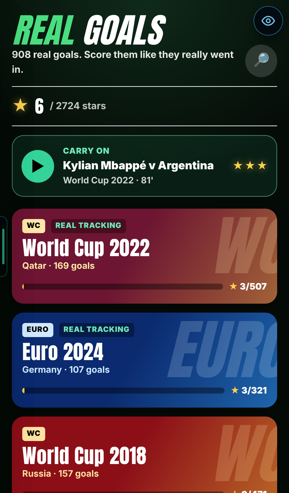
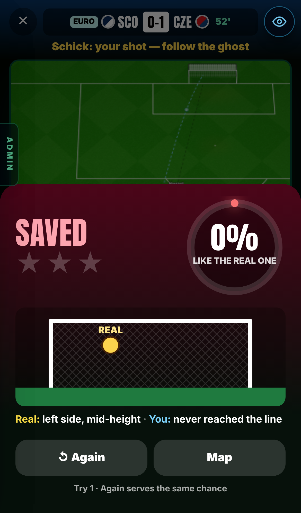
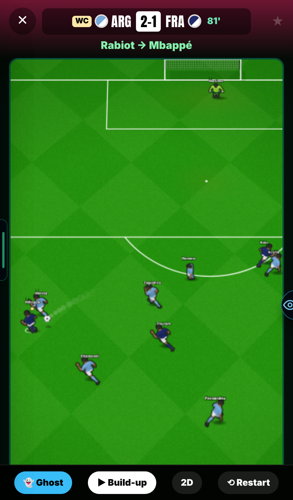
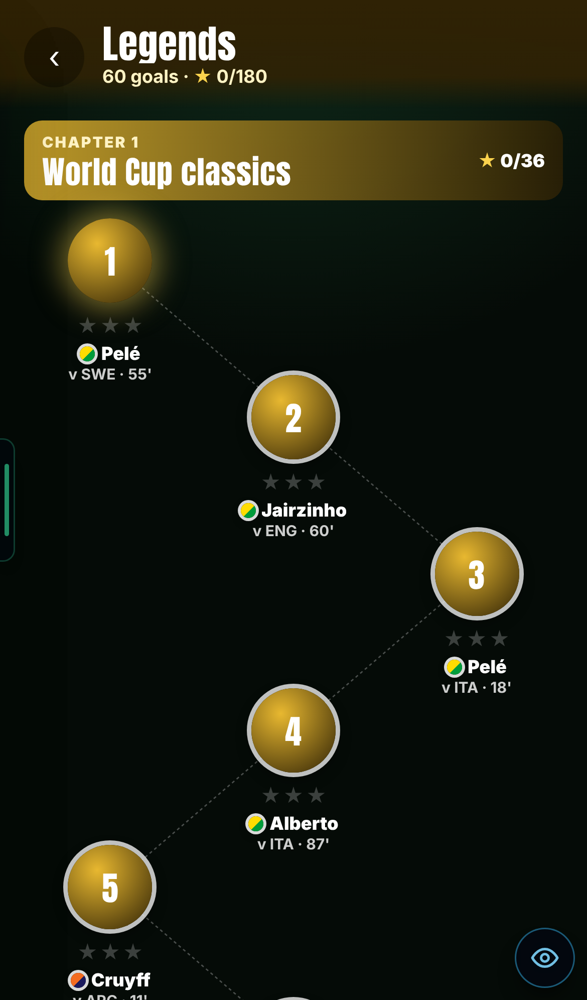
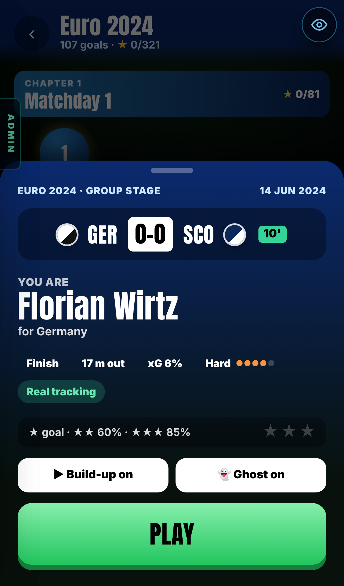
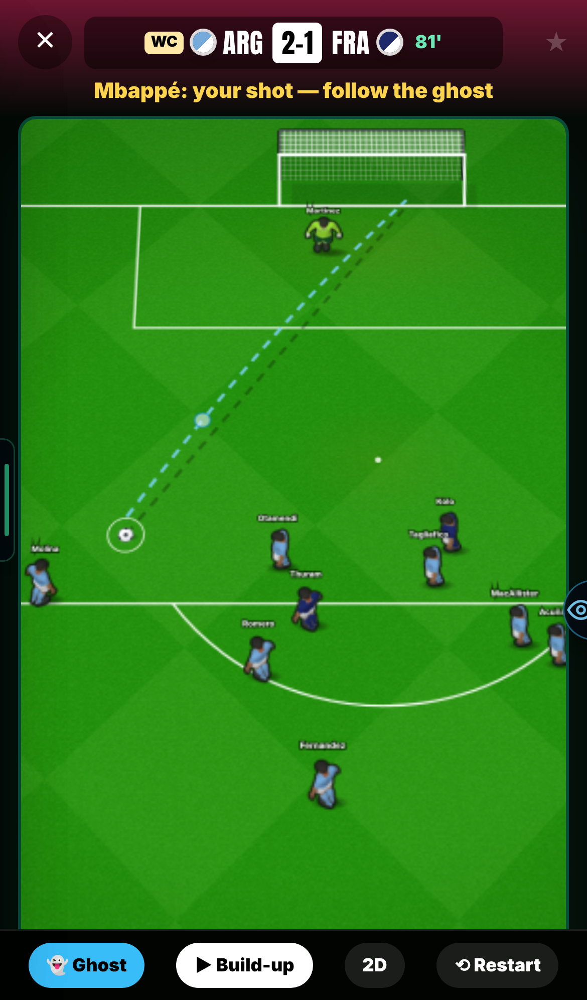

908 real goals, a build-up that follows the real camera, shots that copy the real one always go in, and a proper game-mode look. Still a test page; your career is unchanged.
250 → 908real goals to play
109 / 109strikes 70%+ like the real one that went in
7.3 → 3.2 mmen from where the real camera saw them
1,061 → 0frames where the ball blinked
CHECK THESE
The new home screen
Admin menu → Real Goals.
A whole tournament, round by round
Home → World Cup 2022 → Matchday 1.
The goal card, then PLAY
Tap any level on a map.
The build-up: does it look like the real goal?
Try Mbappé v Argentina (World Cup 2022 → The final) or any Euro 2024 goal.
Copy the ghost: it should never be saved or blocked
Any goal. 70%+ on the result = always a goal.
Legends and Club worldies
Home → Legends (Maradona, Bale, Dele Alli…) and Club worldies.
Search
Home → 🔎. Try "Pavard", "Schick", "Messi".
1 · EVERY GOAL, AND MORE
Problem: only 250 goals, and only 50 of them on the level map. Penalties were left out. Why: the first version only took open-play goals from two tournaments. Fix: every goal of six tournaments (own goals are the only ones left out), plus famous goals and the best club goals in StatsBomb's free data.
WC 2022
169 of 172
Euro 2024
107 of 117
WC 2018
157 · new
Euro 2020
131 · new
Copa 2024
69 · new
AFCON 2023
115 · new
Legends
60 · new
Worldies
100 · new
"of 172": the rest are own goals. Legends are famous goals that are in the free data: Maradona v England 1986, Carlos Alberto in the 1970 final, Bale's overhead kick, Gerrard in Istanbul, Dele Alli v Palace, Messi's chip v Betis and more. Club worldies are the data's own best: the hardest, longest and most special goals of every club season it has.

The new home screen: each collection is a tile with its stars.What the free data doesn't have
The 2026 World Cup is not in it. Club football is only some seasons: the 2015/16 big-five leagues, Barcelona's La Liga 2004–2021, Arsenal 2003/04, Champions League finals 2004–2019, PSG 2021–23, Leverkusen 2023/24, and a few classic World Cup matches.
So "the 100 most iconic goals" is the famous ones that are in it (60) plus the 100 best by the numbers. Famous goals from other seasons (Rooney's overhead kick, Van Persie v Australia…) are not in the data.
2 · COPY THE REAL SHOT AND IT GOES IN
Problem: a shot that looked like the real one could still be saved or blocked. Why: the "unstoppable" rule was a box (60 cm across, 55 cm up), while the % on the result is worked out from the distance in any direction. So a shot shown as 77% could fall outside the box. Fix: one measure for both. A strike heading 70%+ like the real one, worked out the moment you hit it, cannot be blocked or saved.
The goal from the front, to scale: the 70% line reaches 67 cm across and 84 cm up and down (height counts a little less).
70%+ strikes
109 / 109 goals

The new result sheet: GOAL! or what stopped it, the % dial, stars, and where the real one went (gold) against yours (blue). Here a test bot's weak shot at Schick's 50-metre lob.How it was measured
24 real goals from every collection, each struck at the real spot and at 4 spots 25–75 cm off it, against the real defenders and keeper. Every strike that crossed 70%+ like the real one scored (109 of 109). Under 50%, it plays as normal.
This needed a small change to the match engine: an option the real match never turns on. Real matches are byte-for-byte the same with it off (the same 80-strike fingerprint as before).
3 · THE BUILD-UP FOLLOWS THE REAL CAMERA
Problem: the build-up didn't look like the real goal, and players glitched and teleported. Why: each man walked one straight line from one guess to his spot at the shot; passers were snapped onto the ball; the shooter was dragged behind every pass; extra passers vanished when your shot began. Fix: every man now follows StatsBomb's 360 camera, about 10 times in 12 seconds: where it really saw him. The ball goes through every real touch at its real time, and nobody snaps or jumps.
Men off real
7.3 m 3.2 m
Ball blinks
1,061 0
Snap at shot
234 6 goals
Too-fast men
2,911 793 frames
The 793 "too-fast" frames are real sprints, 12–16 m/s at their peak. Only 30 frames across all 754 build-ups go over 16 m/s.

The 2022 final, 81': "Rabiot → Mbappé". Mbappé runs onto the pass, with Thuram, Otamendi and Romero where the real camera had them.Which goals have the real camera
World Cup 2022, Euro 2024 and Euro 2020 (405 goals) have StatsBomb's 360 camera, so you see the real men. World Cup 2018, Copa América 2024, AFCON 2023 and most Legends/worldies don't. There the ball still plays every real touch, but the men move with their team's shape. The tiles and goal cards say REAL TRACKING when a goal has it.
How the men are matched: the camera frames have no names, so each man is matched frame by frame backwards from the shot, where everyone is named. He matches the nearest man on his side that he could have run from.
4 · A GAME, NOT A TEST PAGE
Each tournament is played in its real rounds: Matchday 1, 2, 3, then Round of 16 through The final. Goals come in the order they were scored. Legends and worldies are grouped by where they were scored. A round opens when you have starred half the goals of the round before. Every goal still has 1–3 stars, and the goal card tells you who you are, the score and minute, and how hard it is.

Legends, chapter 1: World Cup classics. The glowing one is next.

The goal card: "You are Florian Wirtz", the real scoreboard, then PLAY.

Your shot: the real scoreboard on top, the ghost into the corner, and Ghost · Build-up · 2D/3D · Restart at the bottom.
5 · REAL SHIRTS FOR EVERY TEAM
All 160 teams in the 908 goals wear their real colours, clubs too. No two shirts look alike in any goal.
KNOWN ISSUES
Not played by a finger yet
The lane was measured by a test harness. The result-screen still came from a test bot's shot.
3D not checked this round
The 2D/3D and camera buttons are on the play screen but were not seen in 3D. The ghost is drawn in 2D only.
No real camera for some collections
World Cup 2018, Copa América, AFCON and the club classics: the men move with their team's shape, not the real camera. StatsBomb lists AFCON as tracked, but the files are not public.
A few odd short names
Some Korean names show the wrong half (for example "Kyu-Sung").
Test only
The StatsBomb data's licence doesn't cover a paid game, so Real Goals stays a test page.
YOUR CALLS
Rounds open with half the goals starred. Right, or should everything be open?
70% = can't be stopped. Too generous, or right?
Shooter's skill: fixed at elite, or the real scorer's own rating?
Show your player on the shot, with his name over his head?
Merge: say "merge" and this goes onto main (the test page only).
Previous versions
Leo v0.17 — 18 Oct 2026 — Real Goals and the effects lab. 50 goals on a level map, a search of 250, the real move, the ghost, the accuracy %, the real lane (32% → 100% on the real line). Visual Effects Lab: 13 moments, 123 effects. Still open: 3D not seen; the ghost is straight for curled shots.
Leo v0.16 — 14 Oct 2026 — Updates tab, Henry finish, hitboxes, sound lab.